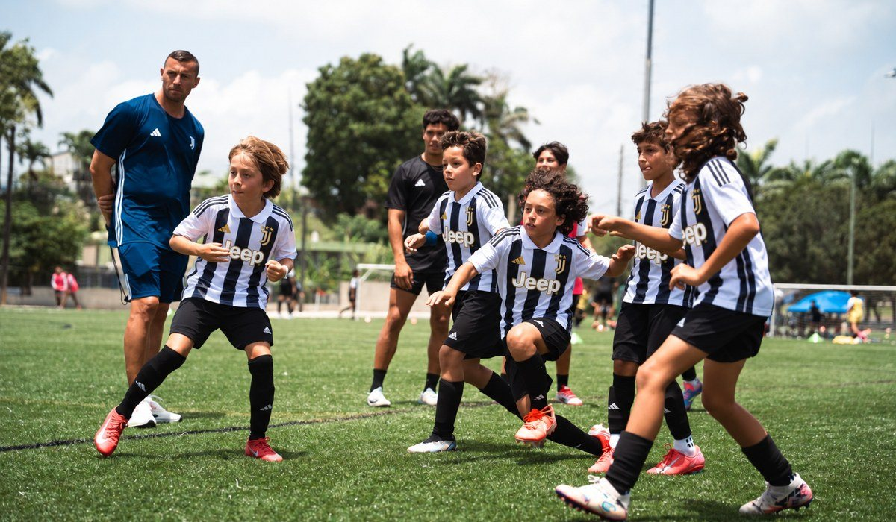

|
Hi Maria, In 9 days, Juventus Academy coaches from Italy will be on the field at Michigan Stars Facility. If you want your player there, this is the time to register. ✓ Three days of training with official Juventus Academy coaches
✓ Training in groups by age, with individual attention
✓ Standout players are noted for future opportunities, like the Juventus Training Experience in Italy |
Registration is $270 for all three days. 📅 Monday to Wednesday, December 28–30
🕐 Ages 6–14: 9 AM–12 PM · Ages 15–19: 1–4 PM
📍 Michigan Stars Facility, 65665 Powell Rd, Washington, MI 48095
⚽ Boys and girls, players and goalkeepers
👉 Ages 15–19: register here |

|